Momentos que
se quedan contigo
Cada aventura en Canarias deja una huella. Estos son los instantes que no caben en palabras, solo en imágenes.
Cuando el cielo arde
Las puestas de sol en Canarias no se ven, se sienten. El volcán en el horizonte, el Atlántico de espejo y el cielo que cambia de color como si alguien lo pintara en tiempo real.
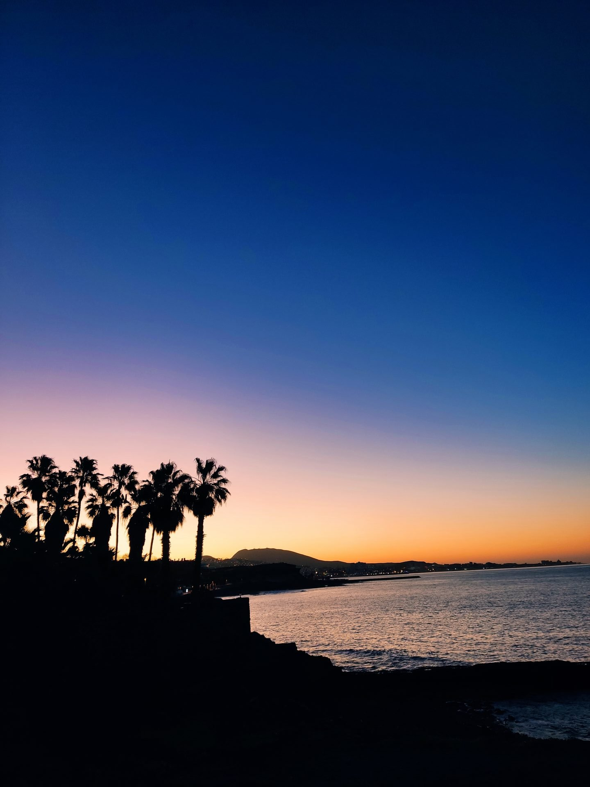
El cielo sobre el Atlántico, encendido en naranja y carmesí.
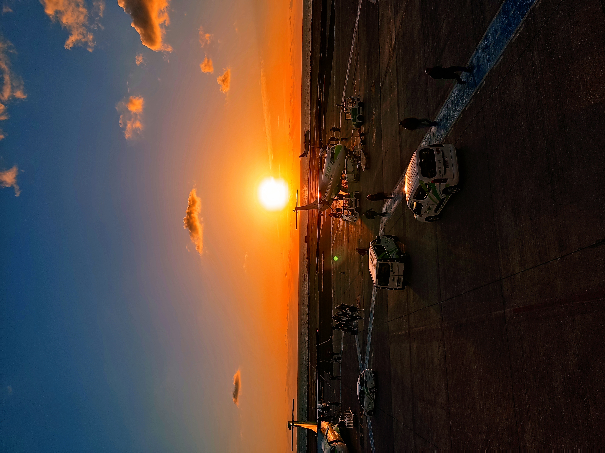
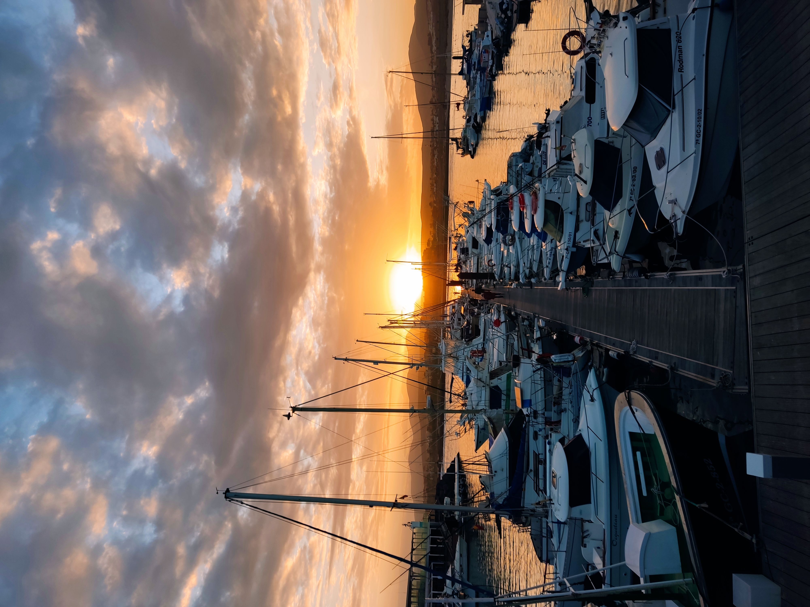
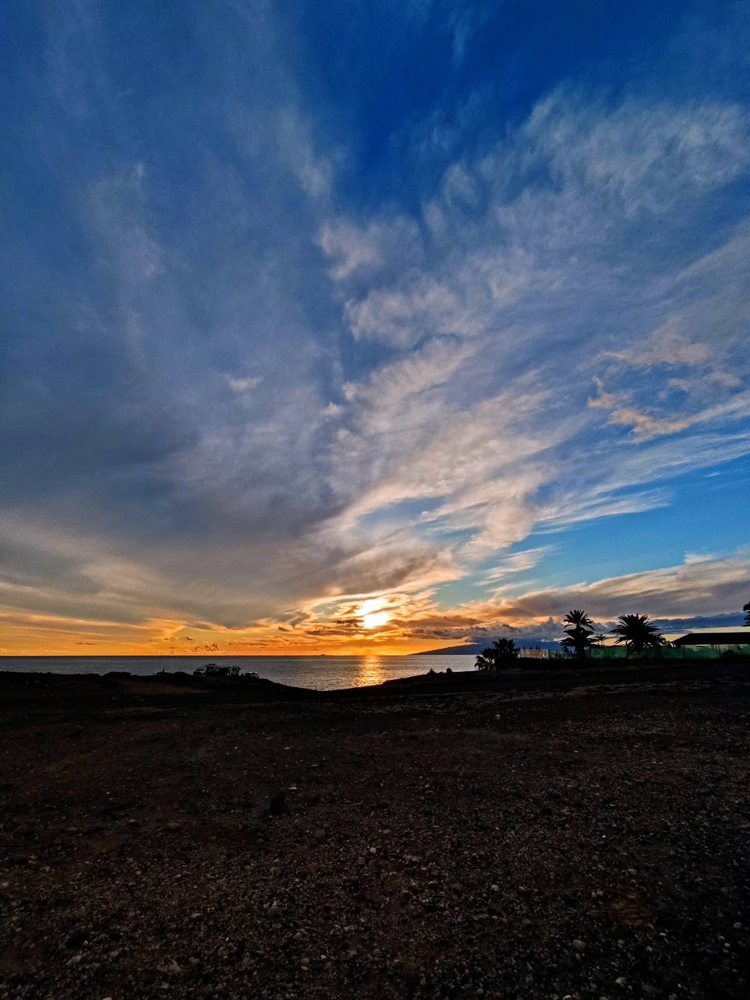
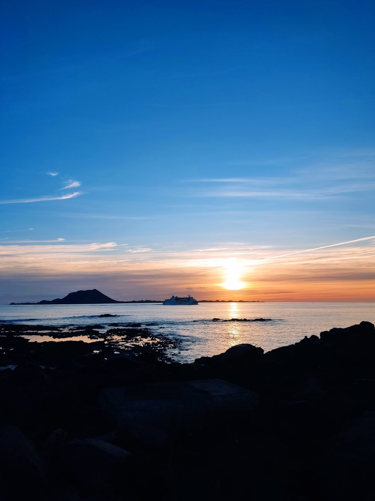
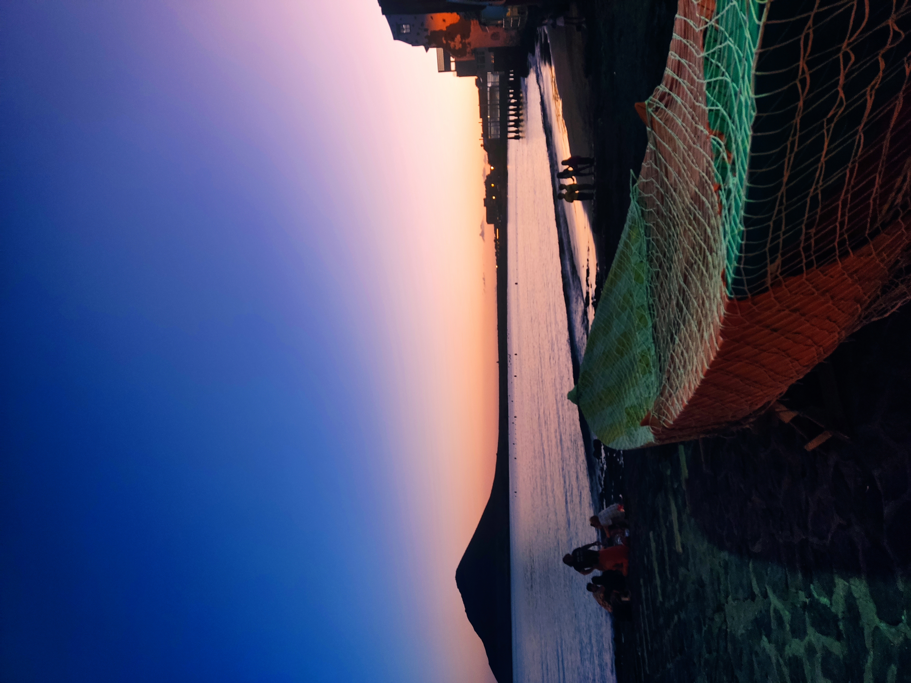
El paisaje volcánico se tiñe de dorado en los últimos minutos de luz.
En Canarias, el atardecer no es el final del día. Es el momento en que la isla te recuerda por qué viniste.
Aventuras en Cada PasoEl cielo más limpio de Europa
La Palma es Reserva Mundial de la Biosfera Starlight. Por la noche, cuando se apagan las luces, la Vía Láctea aparece tan nítida que parece pintada. El Teide perfila su silueta contra miles de estrellas.
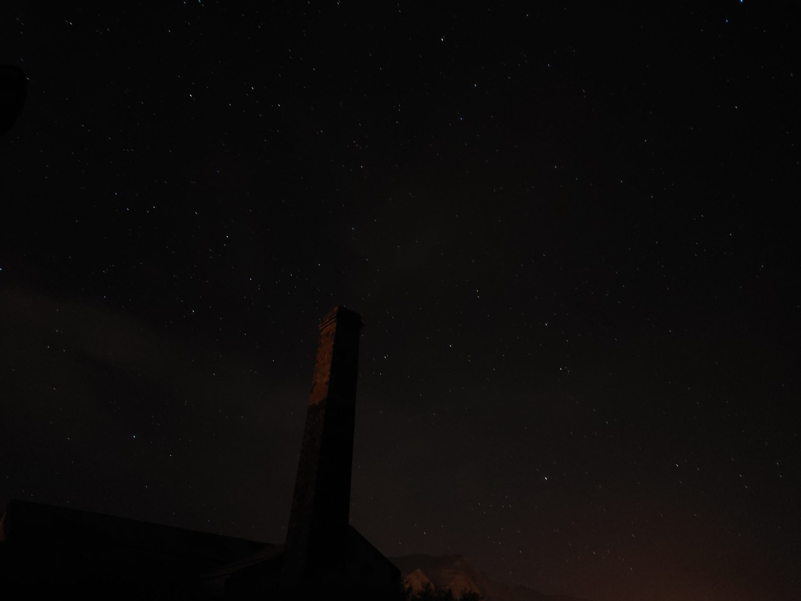
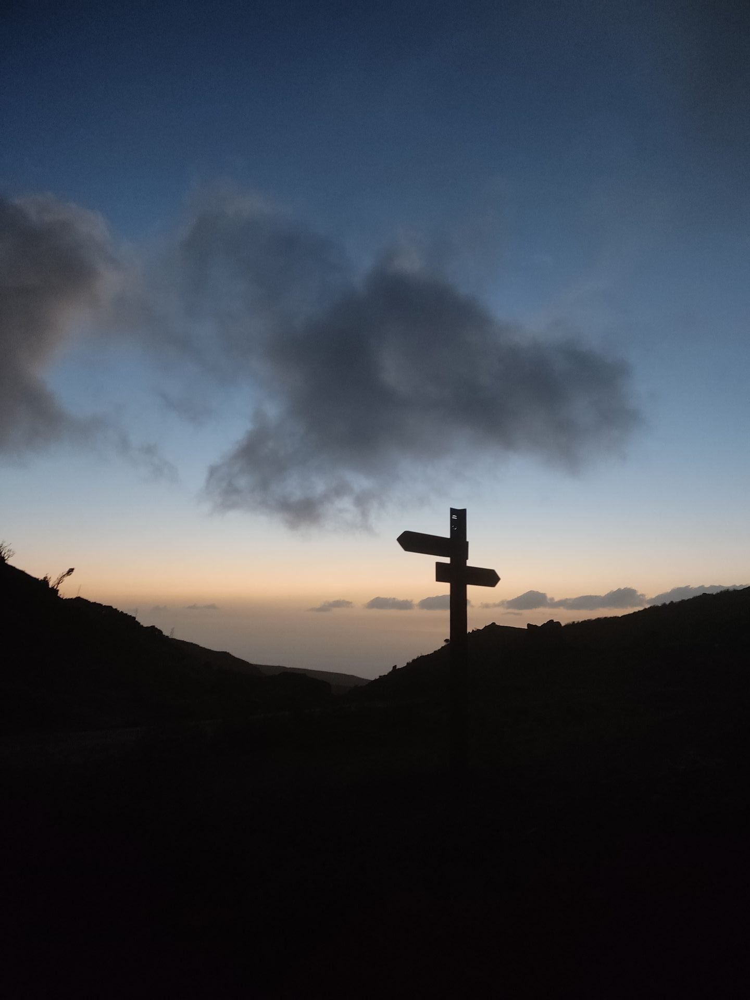
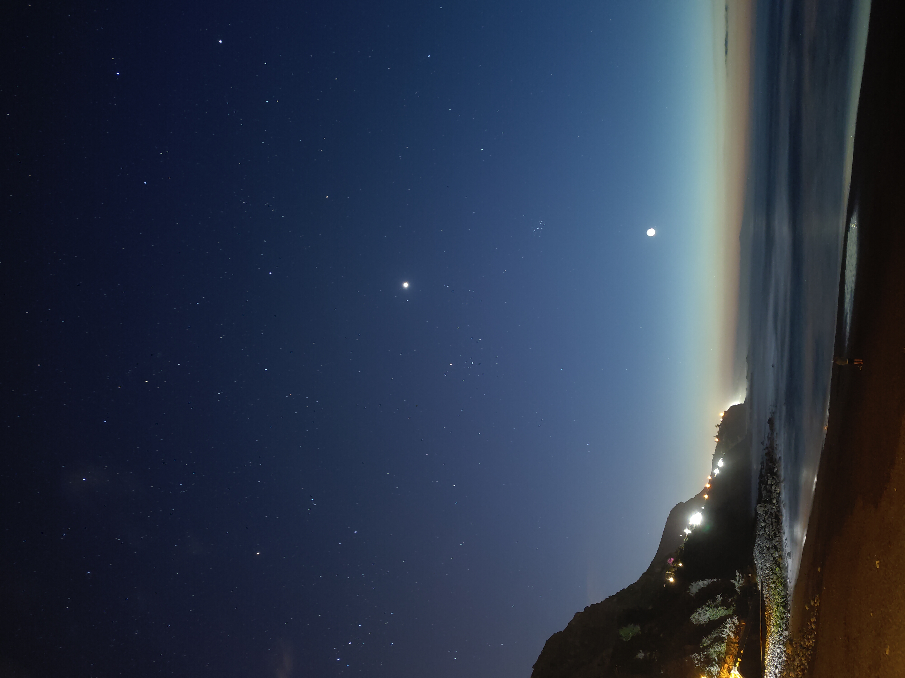
El observatorio del Roque de los Muchachos y el cielo más puro de Europa.
Levanta la vista. En ningún otro lugar de Europa verás el universo tan cerca.
La Palma, Reserva StarlightDonde el volcán se encuentra con el agua
La costa de Canarias es lava solidificada sobre el Atlántico. Acantilados de 600 metros, calas de arena negra y aguas turquesas de una transparencia irreal. El mar aquí no se parece a ningún otro mar.
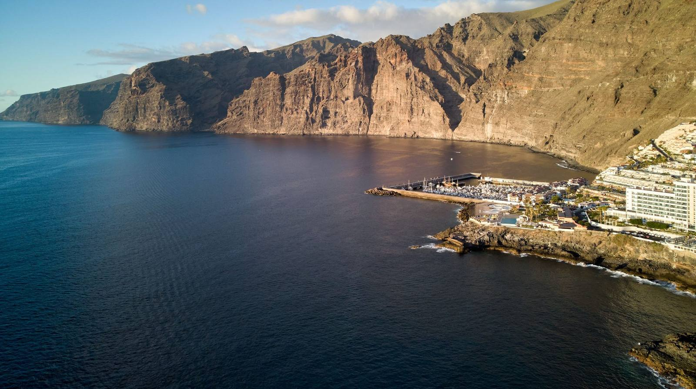
Los acantilados de Los Gigantes: 600 metros de basalto sobre el Atlántico.
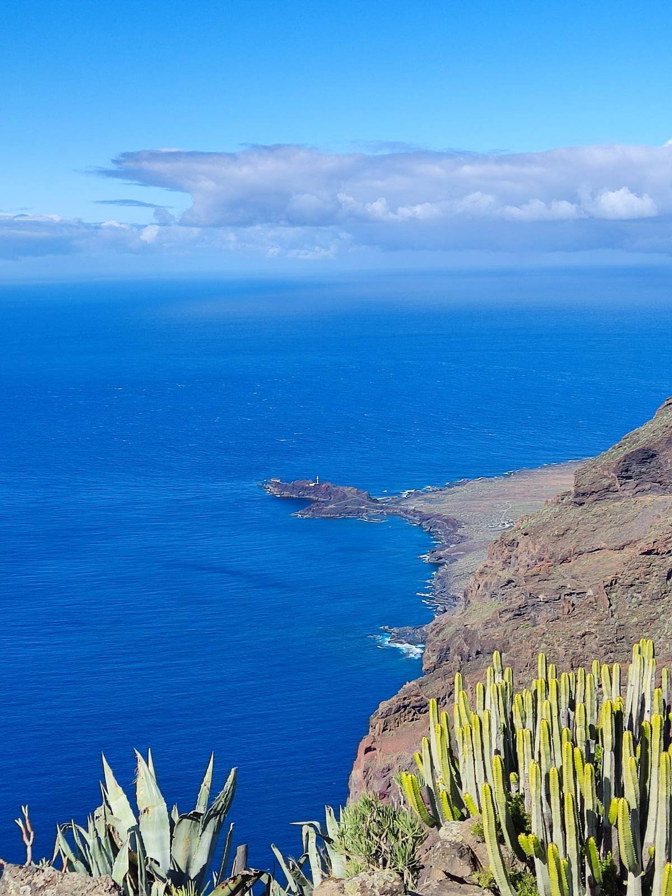
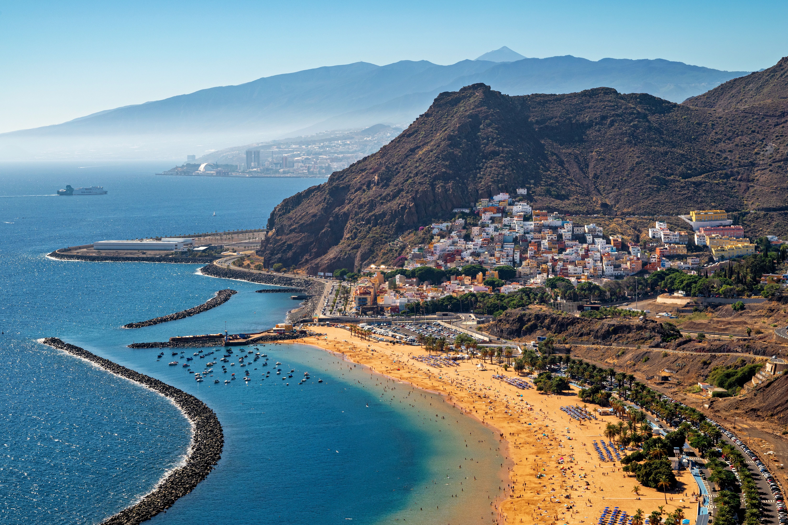
El océano Atlántico no es un fondo de pantalla. Es el protagonista de cada aventura en Canarias.
Aventuras en Cada Paso¿Listo para crear tus propios momentos épicos?
Más de 230 rutas verificadas con coordenadas GPS te esperan en las 9 islas. Elige la tuya y empieza la aventura.